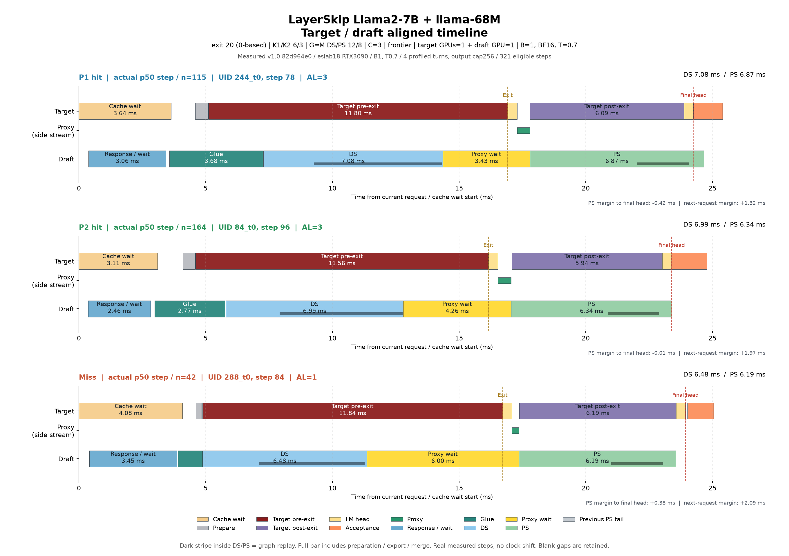
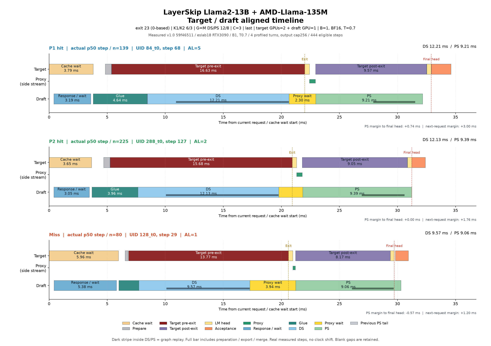
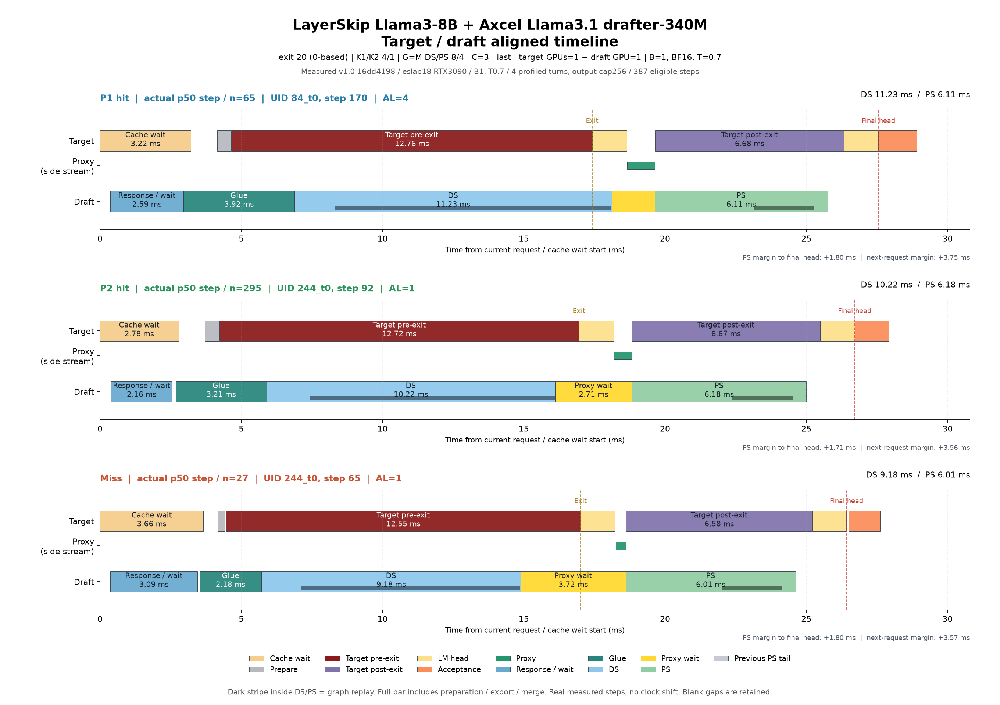
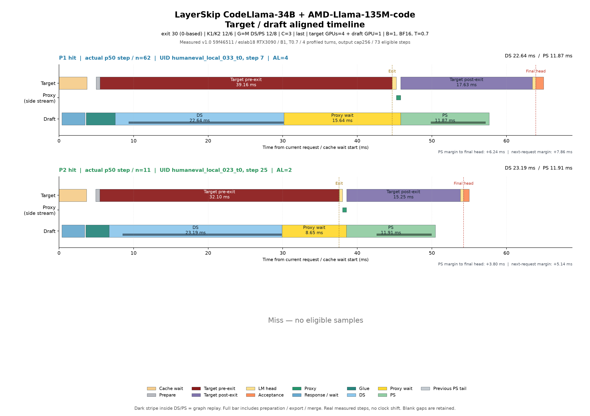
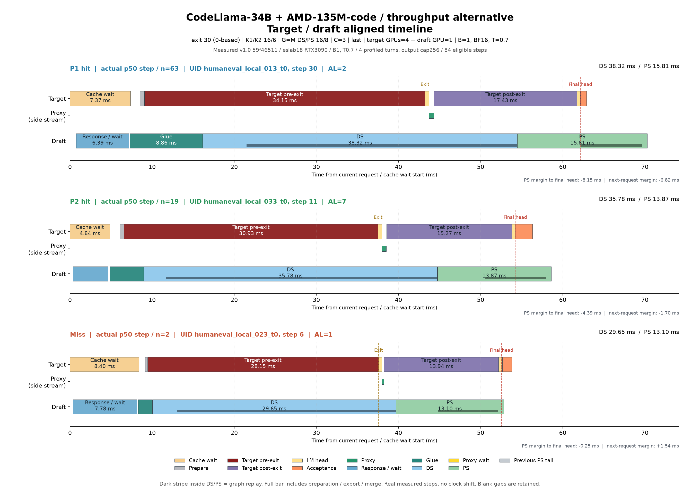

준비/변환/merge를 구분한 상세본: 기존 renderer PDF (14쪽) · 그림 모음
모델마다 P1 hit·P2 hit·miss의 실제 중앙값 대표 step을 같은 축으로 표시했습니다. DS/PS의 전체 막대는 준비·실행·정리까지, 막대 아래 진한 띠는 graph replay입니다. Proxy 보조 줄은 target 내부 별도 stream입니다. 회색 Previous PS tail은 현재 요청 시점에 남아 있던 직전 step의 PS입니다. 세로 점선은 exit와 final head 완료입니다.
기존 ver1.0의 설정별 4턴 profile을 다시 그렸습니다. 원시 시간·대표 선택·파라미터는 유지했고 신규 inference는 없습니다. 34B 12/6은 miss 표본이 없고, 16/6은2개뿐입니다. 전체 막대를 합산하면 overlap을 이중 계산하게 됩니다.
모델별 한 페이지 PDF (5쪽) · 모든 대표 step PDF (41쪽) · 파라미터와 수치 설명 · 이벤트별 상세 자료




